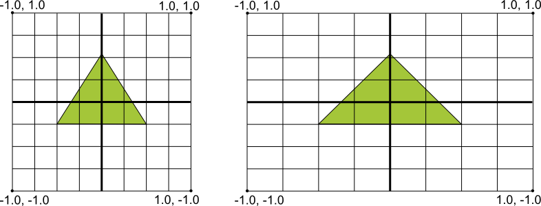
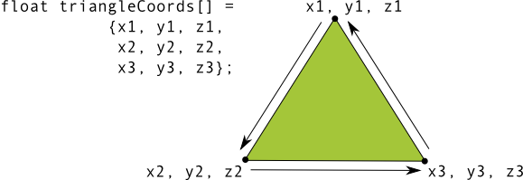

In this document
- The Basics
- Declaring OpenGL Requirements
- Mapping Coordinates for Drawn Objects
- Shape Faces and Winding
- OpenGL Versions and Device Compatibility
- Choosing an OpenGL API Version
Key classes
Related samples
See also
Android includes support for high performance 2D and 3D graphics with the Open Graphics Library (OpenGL®), specifically, the OpenGL ES API. OpenGL is a cross-platform graphics API that specifies a standard software interface for 3D graphics processing hardware. OpenGL ES is a flavor of the OpenGL specification intended for embedded devices. Android supports several versions of the OpenGL ES API:
- OpenGL ES 1.0 and 1.1 - This API specification is supported by Android 1.0 and higher.
- OpenGL ES 2.0 - This API specification is supported by Android 2.2 (API level 8) and higher.
- OpenGL ES 3.0 - This API specification is supported by Android 4.3 (API level 18) and higher.
Caution: Support of the OpenGL ES 3.0 API on a device requires an implementation of this graphics pipeline provided by the device manufacturer. A device running Android 4.3 or higher may not support the OpenGL ES 3.0 API. For information on checking what version of OpenGL ES is supported at run time, see Checking OpenGL ES Version.
Note: The specific API provided by the Android framework is similar to the J2ME JSR239 OpenGL ES API, but is not identical. If you are familiar with J2ME JSR239 specification, be alert for variations.
The Basics
Android supports OpenGL both through its framework API and the Native Development Kit (NDK). This topic focuses on the Android framework interfaces. For more information about the NDK, see the Android NDK.
There are two foundational classes in the Android framework that let you create and manipulate
graphics with the OpenGL ES API: GLSurfaceView and GLSurfaceView.Renderer. If your goal is to use OpenGL in your Android application,
understanding how to implement these classes in an activity should be your first objective.
GLSurfaceView- This class is a
Viewwhere you can draw and manipulate objects using OpenGL API calls and is similar in function to aSurfaceView. You can use this class by creating an instance ofGLSurfaceViewand adding yourRendererto it. However, if you want to capture touch screen events, you should extend theGLSurfaceViewclass to implement the touch listeners, as shown in OpenGL training lesson, Responding to Touch Events. GLSurfaceView.Renderer- This interface defines the methods required for drawing graphics in a
GLSurfaceView. You must provide an implementation of this interface as a separate class and attach it to yourGLSurfaceViewinstance usingGLSurfaceView.setRenderer().The
GLSurfaceView.Rendererinterface requires that you implement the following methods:-
onSurfaceCreated(): The system calls this method once, when creating theGLSurfaceView. Use this method to perform actions that need to happen only once, such as setting OpenGL environment parameters or initializing OpenGL graphic objects. -
onDrawFrame(): The system calls this method on each redraw of theGLSurfaceView. Use this method as the primary execution point for drawing (and re-drawing) graphic objects. -
onSurfaceChanged(): The system calls this method when theGLSurfaceViewgeometry changes, including changes in size of theGLSurfaceViewor orientation of the device screen. For example, the system calls this method when the device changes from portrait to landscape orientation. Use this method to respond to changes in theGLSurfaceViewcontainer.
-
OpenGL ES packages
Once you have established a container view for OpenGL ES using GLSurfaceView and GLSurfaceView.Renderer, you can begin
calling OpenGL APIs using the following classes:
- OpenGL ES 1.0/1.1 API Packages
android.opengl- This package provides a static interface to the OpenGL ES 1.0/1.1 classes and better performance than thejavax.microedition.khronospackage interfaces.javax.microedition.khronos.opengles- This package provides the standard implementation of OpenGL ES 1.0/1.1.
- OpenGL ES 2.0 API Class
android.opengl.GLES20- This package provides the interface to OpenGL ES 2.0 and is available starting with Android 2.2 (API level 8).
- OpenGL ES 3.0 API Class
android.opengl.GLES30- This package provides the interface to OpenGL ES 3.0 and is available starting with Android 4.3 (API level 18).
If you want to start building an app with OpenGL ES right away, follow the Displaying Graphics with OpenGL ES class.
Declaring OpenGL Requirements
If your application uses OpenGL features that are not available on all devices, you must include these requirements in your AndroidManifest.xml file. Here are the most common OpenGL manifest declarations:
- OpenGL ES version requirements - If your application only supports OpenGL ES
2.0, you must declare that requirement by adding the following settings to your manifest as
shown below.
<!-- Tell the system this app requires OpenGL ES 2.0. --> <uses-feature android:glEsVersion="0x00020000" android:required="true" />
Adding this declaration causes Google Play to restrict your application from being installed on devices that do not support OpenGL ES 2.0. If your application is exclusively for devices that support OpenGL ES 3.0, you can also specify this in your manifest:
<!-- Tell the system this app requires OpenGL ES 3.0. --> <uses-feature android:glEsVersion="0x00030000" android:required="true" />
Note: The OpenGL ES 3.0 API is backwards-compatible with the 2.0 API, which means you can be more flexible with your implementation of OpenGL ES in your application. By declaring the OpenGL ES 2.0 API as a requirement in your manifest, you can use that API version as a default, check for the availability of the 3.0 API at run time and then use OpenGL ES 3.0 features if the device supports it. For more information about checking the OpenGL ES version supported by a device, see Checking OpenGL ES Version.
- Texture compression requirements - If your application uses texture
compression formats, you must declare the formats your application supports in your manifest file
using
<supports-gl-texture>. For more information about available texture compression formats, see Texture compression support.Declaring texture compression requirements in your manifest hides your application from users with devices that do not support at least one of your declared compression types. For more information on how Google Play filtering works for texture compressions, see the Google Play and texture compression filtering section of the
<supports-gl-texture>documentation.
Mapping Coordinates for Drawn Objects
One of the basic problems in displaying graphics on Android devices is that their screens can vary in size and shape. OpenGL assumes a square, uniform coordinate system and, by default, happily draws those coordinates onto your typically non-square screen as if it is perfectly square.
Figure 1. Default OpenGL coordinate system (left) mapped to a typical Android device screen (right).
The illustration above shows the uniform coordinate system assumed for an OpenGL frame on the left, and how these coordinates actually map to a typical device screen in landscape orientation on the right. To solve this problem, you can apply OpenGL projection modes and camera views to transform coordinates so your graphic objects have the correct proportions on any display.
In order to apply projection and camera views, you create a projection matrix and a camera view matrix and apply them to the OpenGL rendering pipeline. The projection matrix recalculates the coordinates of your graphics so that they map correctly to Android device screens. The camera view matrix creates a transformation that renders objects from a specific eye position.
Projection and camera view in OpenGL ES 1.0
In the ES 1.0 API, you apply projection and camera view by creating each matrix and then adding them to the OpenGL environment.
- Projection matrix - Create a projection matrix using the geometry of the
device screen in order to recalculate object coordinates so they are drawn with correct proportions.
The following example code demonstrates how to modify the
onSurfaceChanged()method of aGLSurfaceView.Rendererimplementation to create a projection matrix based on the screen's aspect ratio and apply it to the OpenGL rendering environment.public void onSurfaceChanged(GL10 gl, int width, int height) { gl.glViewport(0, 0, width, height); // make adjustments for screen ratio float ratio = (float) width / height; gl.glMatrixMode(GL10.GL_PROJECTION); // set matrix to projection mode gl.glLoadIdentity(); // reset the matrix to its default state gl.glFrustumf(-ratio, ratio, -1, 1, 3, 7); // apply the projection matrix } - Camera transformation matrix - Once you have adjusted the coordinate system
using a projection matrix, you must also apply a camera view. The following example code shows how
to modify the
onDrawFrame()method of aGLSurfaceView.Rendererimplementation to apply a model view and use theGLU.gluLookAt()utility to create a viewing tranformation which simulates a camera position.public void onDrawFrame(GL10 gl) { ... // Set GL_MODELVIEW transformation mode gl.glMatrixMode(GL10.GL_MODELVIEW); gl.glLoadIdentity(); // reset the matrix to its default state // When using GL_MODELVIEW, you must set the camera view GLU.gluLookAt(gl, 0, 0, -5, 0f, 0f, 0f, 0f, 1.0f, 0.0f); ... }
Projection and camera view in OpenGL ES 2.0 and higher
In the ES 2.0 and 3.0 APIs, you apply projection and camera view by first adding a matrix member to the vertex shaders of your graphics objects. With this matrix member added, you can then generate and apply projection and camera viewing matrices to your objects.
- Add matrix to vertex shaders - Create a variable for the view projection matrix
and include it as a multiplier of the shader's position. In the following example vertex shader
code, the included
uMVPMatrixmember allows you to apply projection and camera viewing matrices to the coordinates of objects that use this shader.private final String vertexShaderCode = // This matrix member variable provides a hook to manipulate // the coordinates of objects that use this vertex shader. "uniform mat4 uMVPMatrix; \n" + "attribute vec4 vPosition; \n" + "void main(){ \n" + // The matrix must be included as part of gl_Position // Note that the uMVPMatrix factor *must be first* in order // for the matrix multiplication product to be correct. " gl_Position = uMVPMatrix * vPosition; \n" + "} \n";Note: The example above defines a single transformation matrix member in the vertex shader into which you apply a combined projection matrix and camera view matrix. Depending on your application requirements, you may want to define separate projection matrix and camera viewing matrix members in your vertex shaders so you can change them independently.
- Access the shader matrix - After creating a hook in your vertex shaders to
apply projection and camera view, you can then access that variable to apply projection and
camera viewing matrices. The following code shows how to modify the
onSurfaceCreated()method of aGLSurfaceView.Rendererimplementation to access the matrix variable defined in the vertex shader above.public void onSurfaceCreated(GL10 unused, EGLConfig config) { ... muMVPMatrixHandle = GLES20.glGetUniformLocation(mProgram, "uMVPMatrix"); ... } - Create projection and camera viewing matrices - Generate the projection and
viewing matrices to be applied the graphic objects. The following example code shows how to modify
the
onSurfaceCreated()andonSurfaceChanged()methods of aGLSurfaceView.Rendererimplementation to create camera view matrix and a projection matrix based on the screen aspect ratio of the device.public void onSurfaceCreated(GL10 unused, EGLConfig config) { ... // Create a camera view matrix Matrix.setLookAtM(mVMatrix, 0, 0, 0, -3, 0f, 0f, 0f, 0f, 1.0f, 0.0f); } public void onSurfaceChanged(GL10 unused, int width, int height) { GLES20.glViewport(0, 0, width, height); float ratio = (float) width / height; // create a projection matrix from device screen geometry Matrix.frustumM(mProjMatrix, 0, -ratio, ratio, -1, 1, 3, 7); } - Apply projection and camera viewing matrices - To apply the projection and
camera view transformations, multiply the matrices together and then set them into the vertex
shader. The following example code shows how modify the
onDrawFrame()method of aGLSurfaceView.Rendererimplementation to combine the projection matrix and camera view created in the code above and then apply it to the graphic objects to be rendered by OpenGL.public void onDrawFrame(GL10 unused) { ... // Combine the projection and camera view matrices Matrix.multiplyMM(mMVPMatrix, 0, mProjMatrix, 0, mVMatrix, 0); // Apply the combined projection and camera view transformations GLES20.glUniformMatrix4fv(muMVPMatrixHandle, 1, false, mMVPMatrix, 0); // Draw objects ... }
For a complete example of how to apply projection and camera view with OpenGL ES 2.0, see the Displaying Graphics with OpenGL ES class.
Shape Faces and Winding
In OpenGL, the face of a shape is a surface defined by three or more points in three-dimensional space. A set of three or more three-dimensional points (called vertices in OpenGL) have a front face and a back face. How do you know which face is front and which is the back? Good question. The answer has to do with winding, or, the direction in which you define the points of a shape.
Figure 1. Illustration of a coordinate list which translates into a counterclockwise drawing order.
In this example, the points of the triangle are defined in an order such that they are drawn in a counterclockwise direction. The order in which these coordinates are drawn defines the winding direction for the shape. By default, in OpenGL, the face which is drawn counterclockwise is the front face. The triangle shown in Figure 1 is defined so that you are looking at the front face of the shape (as interpreted by OpenGL) and the other side is the back face.
Why is it important to know which face of a shape is the front face? The answer has to do with a commonly used feature of OpenGL, called face culling. Face culling is an option for the OpenGL environment which allows the rendering pipeline to ignore (not calculate or draw) the back face of a shape, saving time, memory and processing cycles:
// enable face culling feature gl.glEnable(GL10.GL_CULL_FACE); // specify which faces to not draw gl.glCullFace(GL10.GL_BACK);
If you try to use the face culling feature without knowing which sides of your shapes are the front and back, your OpenGL graphics are going to look a bit thin, or possibly not show up at all. So, always define the coordinates of your OpenGL shapes in a counterclockwise drawing order.
Note: It is possible to set an OpenGL environment to treat the clockwise face as the front face, but doing so requires more code and is likely to confuse experienced OpenGL developers when you ask them for help. So don’t do that.
OpenGL Versions and Device Compatibility
The OpenGL ES 1.0 and 1.1 API specifications have been supported since Android 1.0. Beginning with Android 2.2 (API level 8), the framework supports the OpenGL ES 2.0 API specification. OpenGL ES 2.0 is supported by most Android devices and is recommended for new applications being developed with OpenGL. OpenGL ES 3.0 is supported with Android 4.3 (API level 18) and higher, on devices that provide an implementation of the OpenGL ES 3.0 API. For information about the relative number of Android-powered devices that support a given version of OpenGL ES, see the OpenGL ES Version Dashboard.
Graphics programming with OpenGL ES 1.0/1.1 API is significantly different than using the 2.0 and higher versions. The 1.x version of the API has more convenience methods and a fixed graphics pipeline, while the OpenGL ES 2.0 and 3.0 APIs provide more direct control of the pipeline through use of OpenGL shaders. You should carefully consider the graphics requirements and choose the API version that works best for your application. For more information, see Choosing an OpenGL API Version.
The OpenGL ES 3.0 API provides additional features and better performance than the 2.0 API and is also backward compatible. This means that you can potentially write your application targeting OpenGL ES 2.0 and conditionally include OpenGL ES 3.0 graphics features if they are available. For more information on checking for availability of the 3.0 API, see Checking OpenGL ES Version
Texture compression support
Texture compression can significantly increase the performance of your OpenGL application by
reducing memory requirements and making more efficient use of memory bandwidth. The Android
framework provides support for the ETC1 compression format as a standard feature, including a ETC1Util utility class and the etc1tool compression tool (located in the
Android SDK at <sdk>/tools/). For an example of an Android application that uses
texture compression, see the CompressedTextureActivity code sample in Android SDK
(<sdk>/samples/<version>/ApiDemos/src/com/example/android/apis/graphics/).
Caution: The ETC1 format is supported by most Android devices,
but it not guaranteed to be available. To check if the ETC1 format is supported on a device, call
the ETC1Util.isETC1Supported() method.
Note: The ETC1 texture compression format does not support textures with an transparency (alpha channel). If your application requires textures with transparency, you should investigate other texture compression formats available on your target devices.
The ETC2/EAC texture compression formats are guaranteed to be available when using the OpenGL ES 3.0 API. This texture format offers excellent compression ratios with high visual quality and the format also supports transparency (alpha channel).
Beyond the ETC formats, Android devices have varied support for texture compression based on their GPU chipsets and OpenGL implementations. You should investigate texture compression support on the devices you are are targeting to determine what compression types your application should support. In order to determine what texture formats are supported on a given device, you must query the device and review the OpenGL extension names, which identify what texture compression formats (and other OpenGL features) are supported by the device. Some commonly supported texture compression formats are as follows:
- ATITC (ATC) - ATI texture compression (ATITC or ATC) is available on a
wide variety of devices and supports fixed rate compression for RGB textures with and without
an alpha channel. This format may be represented by several OpenGL extension names, for example:
GL_AMD_compressed_ATC_textureGL_ATI_texture_compression_atitc
- PVRTC - PowerVR texture compression (PVRTC) is available on a wide
variety of devices and supports 2-bit and 4-bit per pixel textures with or without an alpha channel.
This format is represented by the following OpenGL extension name:
GL_IMG_texture_compression_pvrtc
- S3TC (DXTn/DXTC) - S3 texture compression (S3TC) has several
format variations (DXT1 to DXT5) and is less widely available. The format supports RGB textures with
4-bit alpha or 8-bit alpha channels. This format may be represented by several OpenGL extension
names, for example:
GL_OES_texture_compression_S3TCGL_EXT_texture_compression_s3tcGL_EXT_texture_compression_dxt1GL_EXT_texture_compression_dxt3GL_EXT_texture_compression_dxt5
- 3DC - 3DC texture compression (3DC) is a less widely available format that
supports RGB textures with an alpha channel. This format is represented by the following OpenGL
extension name:
GL_AMD_compressed_3DC_texture
Warning: These texture compression formats are not supported on all devices. Support for these formats can vary by manufacturer and device. For information on how to determine what texture compression formats are on a particular device, see the next section.
Note: Once you decide which texture compression formats your application will support, make sure you declare them in your manifest using <supports-gl-texture> . Using this declaration enables filtering by external services such as Google Play, so that your app is installed only on devices that support the formats your app requires. For details, see OpenGL manifest declarations.
Determining OpenGL extensions
Implementations of OpenGL vary by Android device in terms of the extensions to the OpenGL ES API that are supported. These extensions include texture compressions, but typically also include other extensions to the OpenGL feature set.
To determine what texture compression formats, and other OpenGL extensions, are supported on a particular device:
- Run the following code on your target devices to determine what texture compression
formats are supported:
String extensions = javax.microedition.khronos.opengles.GL10.glGetString( GL10.GL_EXTENSIONS);Warning: The results of this call vary by device model! You must run this call on several target devices to determine what compression types are commonly supported.
- Review the output of this method to determine what OpenGL extensions are supported on the device.
Checking OpenGL ES Version
There are several versions of the OpenGL ES available on Android devices. You can specify the minimum version of the API your application requires in your manifest, but you may also want to take advantage of features in a newer API at the same time. For example, the OpenGL ES 3.0 API is backward-compatible with the 2.0 version of the API, so you may want to write your application so that it uses OpenGL ES 3.0 features, but falls back to the 2.0 API if the 3.0 API is not available.
Before using OpenGL ES features from a version higher than the minimum required in your application manifest, your application should check the version of the API available on the device. You can do this in one of two ways:
- Attempt create the higher-level OpenGL ES context (
EGLContext) and check the result. - Create a minimum-supported OpenGL ES context and check the version value.
The following example code demonstrates how to check the available OpenGL ES version by creating
an EGLContext and checking the result. This example shows how to check for
OpenGL ES 3.0 version:
private static double glVersion = 3.0;
private static class ContextFactory implements GLSurfaceView.EGLContextFactory {
private static int EGL_CONTEXT_CLIENT_VERSION = 0x3098;
public EGLContext createContext(
EGL10 egl, EGLDisplay display, EGLConfig eglConfig) {
Log.w(TAG, "creating OpenGL ES " + glVersion + " context");
int[] attrib_list = {EGL_CONTEXT_CLIENT_VERSION, (int) glVersion,
EGL10.EGL_NONE };
// attempt to create a OpenGL ES 3.0 context
EGLContext context = egl.eglCreateContext(
display, eglConfig, EGL10.EGL_NO_CONTEXT, attrib_list);
return context; // returns null if 3.0 is not supported;
}
}
If the createContext() method show above returns null, your code should create a OpenGL
ES 2.0 context instead and fall back to using only that API.
The following code example demonstrates how to check the OpenGL ES version by creating a minimum supported context first, and then checking the version string:
// Create a minimum supported OpenGL ES context, then check:
String version = javax.microedition.khronos.opengles.GL10.glGetString(
GL10.GL_VERSION);
Log.w(TAG, "Version: " + version );
// The version format is displayed as: "OpenGL ES <major>.<minor>"
// followed by optional content provided by the implementation.
With this approach, if you discover that the device supports a higher-level API version, you must destroy the minimum OpenGL ES context and create a new context with the higher available API version.
Choosing an OpenGL API Version
OpenGL ES 1.0 API version (and the 1.1 extensions), version 2.0, and version 3.0 all provide high performance graphics interfaces for creating 3D games, visualizations and user interfaces. Graphics progamming for OpenGL ES 2.0 and 3.0 is largely similar, with version 3.0 representing a superset of the 2.0 API with additional features. Programming for the OpenGL ES 1.0/1.1 API versus OpenGL ES 2.0 and 3.0 differs significantly, and so developers should carefully consider the following factors before starting development with these APIs:
- Performance - In general, OpenGL ES 2.0 and 3.0 provide faster graphics performance than the ES 1.0/1.1 APIs. However, the performance difference can vary depending on the Android device your OpenGL application is running on, due to differences in hardware manufacturer's implementation of the OpenGL ES graphics pipeline.
- Device Compatibility - Developers should consider the types of devices, Android versions and the OpenGL ES versions available to their customers. For more information on OpenGL compatibility across devices, see the OpenGL Versions and Device Compatibility section.
- Coding Convenience - The OpenGL ES 1.0/1.1 API provides a fixed function pipeline and convenience functions which are not available in the OpenGL ES 2.0 or 3.0 APIs. Developers who are new to OpenGL ES may find coding for version 1.0/1.1 faster and more convenient.
- Graphics Control - The OpenGL ES 2.0 and 3.0 APIs provide a higher degree of control by providing a fully programmable pipeline through the use of shaders. With more direct control of the graphics processing pipeline, developers can create effects that would be very difficult to generate using the 1.0/1.1 API.
- Texture Support - The OpenGL ES 3.0 API has the best support for texture compression because it guarantees availability of the ETC2 compression format, which supports transparency. The 1.x and 2.0 API implementations usually include support for ETC1, however this texture format does not support transparency and so you must typically provide resources in other compression formats supported by the devices you are targeting. For more information, see Texture compression support.
While performance, compatibility, convenience, control and other factors may influence your decision, you should pick an OpenGL API version based on what you think provides the best experience for your users.